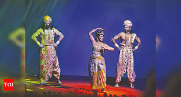

CONTENTS
Early Life and Royal Heritage
Marriage and Ascension
Exile and Strategic Alliances
Military Training and Leadership
Innovative Warfare Tactics
Reclamation of Sivagangai
Governance and Reforms

Cultural Contributions
Legacy and Recognition
Memorials and Tributes
In Popular Culture
Final Years and Passing
Back To Home